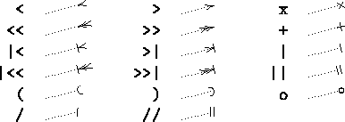
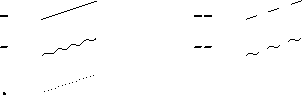
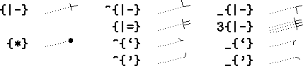

Xy-pic User's Guide 


@variant{tail shaft
head} |
@variant{head}
|
that in describes arrows with the indicated tail, shaft, and head (on the first form the tail and head can be omitted; the second style defaults to having no tail and a standard shaft).
The following possibilities exist for head and tail which we will denote tips (here shown as heads):
|  |
and the shaft should be one of the following:
|  |
The variant should be empty or one of the following:
^ | "above" variant |
_ | "below" variant |
2 | "double" variant |
3 | "triple" variant |
Here are some standard arrows in this notation, all from A to B as usual:
As a special convenience = and : are provided as abbreviations
for - and . with variant forced to 2.
As it can be seen, the variant will affect the entire arrow. Sometimes this is not what is wanted. In that case a local variant can be used by entering any of the tail, shaft, and head, on the following form:
variant{tip} |
variant{shaft}
|
Here are some arrows where this is required:
Notice that there is no distinction between shafts and tips using this form, thus it is necessary to include all three of tail, shaft, and head, when using it. The advantage is that it is possible then to "fill with a tip." Furthermore, the following additional possibilities are available when using this notation:
|  |
The even more general form *object can be used, where
object refers to any of the constructions described in
section 2.2.
Xy-pic User's Guide